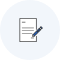
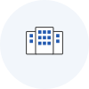
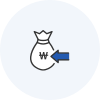
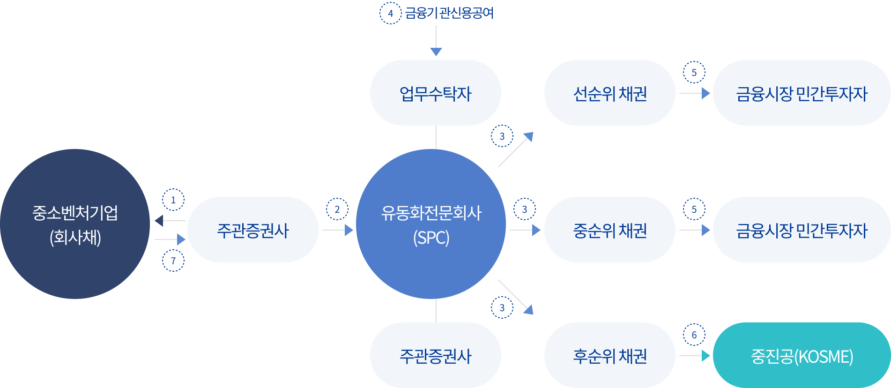
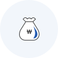
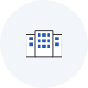
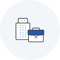
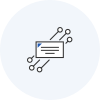

사업개요


 기술성과 미래성장가치가 우수한 중소기업을 대상으로 투자와 융자의 장점을 복합하여 지원하는 방식으로 성장공유형 대출 및 스케일업금융이 있습니다.
기술성과 미래성장가치가 우수한 중소기업을 대상으로 투자와 융자의 장점을 복합하여 지원하는 방식으로 성장공유형 대출 및 스케일업금융이 있습니다.
투융자 복합금융이란?
- 성장공유형 대출
-
전환사채(CB) 등의 주식연계 회사채를 중소벤처기업진흥공단이 인수
- 전환사채의 주식전환을 통한 자본확충으로 재무구조가 개선됨
- 스케일업금융
- 중소기업이 발행하는 회사채를 기초자산으로 구조화전문회사(SPC)에서 유동화 증권 발행, 중소벤처기업진흥공단이 후순위증권 인수
신청대상
- 성장공유형 대출
- 기술성과 미래 성장가치가 큰 기업으로 기업공개 가능성이 있는 기업
- 스케일업금융
- 혁신성장 잠재력 및 기반을 갖춘 기업으로 직접 금융 시장을 활용하여 자금을 조달
성장공유형 대출
지원방식
- 각 지역본(지)부에서 신청·접수하여 전환사채(CB) 등 인수방식으로 자금지원
- 성장이익 공유 가능성 등을 판단하여 주식으로 전환 여부를 중진공이 결정
- 주식으로 전환하지 않는 경우, 해당기업은 만기보장금리로 분할상환
지원조건
- 3년 미만
-
-
지원한도 : 2.공통사항의 ‘개별기업당 융자한도’
중소기업 정책자금 융자계획 (공고)
- 이자율 : 표면금리 0.25%(단리) 만기보장금리 3%(단리)
-
지원기간 :
- 업력 7년 미만인 기업 : 7년 이내(4년 거치, 3년 분할상환)
- 업력 7년 이상인 기업 : 5년 이내(2년 거치, 3년 분할상환) - 전환주식종류 : 상환전환
- 전환기간 : 지원기간 이내 중소벤처기업진흥공단에서 전환권 행사
- 전환가격 결정 : 향후 후속투자 전환가격의 80%
- 외부회계감사 :
- 지원금액 5억원 미만의 경우 지원연도 포함 3년간 외부회계감사 면제 - 기타조건 :
- 대출기간 내의 임의 조기상환 금지
- 자본금 변동 등 사전동의 의무
-
지원한도 : 2.공통사항의 ‘개별기업당 융자한도’
- 3년 이상
-
-
지원한도 : 2.공통사항의 ‘개별기업당 융자한도’
중소기업 정책자금 융자계획 (공고)
- 이자율 : 표면금리 0.5%(단리) 만기보장금리 3%(단리)
-
지원기간 :
- 업력 7년 미만인 기업 : 7년 이내(4년 거치, 3년 분할상환)
- 업력 7년 이상인 기업 : 5년 이내(2년 거치, 3년 분할상환) - 전환주식종류 : 상환전환
- 전환기간 : 지원기간 이내 중소벤처기업진흥공단에서 전환권 행사
- 전환가격 결정 : 기업가치에 따라 개별 적용
- 외부회계감사 :
- 지원 당해 연도부터 회계법인의 외부회계감사 수감 필수 - 기타조건 :
- 대출기간 내의 임의 조기상환 금지
- 자본금 변동 등 사전동의 의무
-
지원한도 : 2.공통사항의 ‘개별기업당 융자한도’
지원절차

- STEP 01
- 자금신청 (지역본(지)부)
- STEP 02
- 사업타당성 평가 및 회계실사(현장실사)
- STEP 03
- 전환 조건 협상

- STEP 04
- 심의위원회
- STEP 05
- 계약체결 및 자금지원

- STEP 06
- 주식전환 / 분할상환
스케일업금융
지원방식
- 중소벤처기업진흥공단 각 지역본(지)부에서 신청·접수하여, 중소벤처기업의 신규발행 회사채 등을 기초자산으로 자산유동화증권 발행을 통해 자금지원
- 3년 만기·고정금리(발행시점 시장상황 및 신용등급별 차등)로 지원하며, 기업당 발행한도는 150억원(잔액기준)
지원조건
- 지원대상
-
▣ 「중소기업기본법」상 중소기업으로 신용평가 일정등급 이상인 기업(회차별 공고 참조)
- 「주식회사 등의 외부감사에 관한 법률」에 따른 외부감사 수감기업
- 스케일업금융
-
- 발행예정금액 : 예산범위 내에서 회차별 조정
- 발행형태 : 일반사채(SB), 신주인수권부사채(BW), 전환사채(CB)
-
만기 및 상환조건
- SB : 1년말 20% , 2년말 20%, 3년말 60% / 이자납입 : 발행시점 총 이자 선취
- BW, CB : 1년말 20% , 2년말 20%, 3년말 100% / 이자납입 : 분기별 후급 -
신용등급별 발행금리 : 발행시점 시장상황에 따라 변동
* 발행금리는 발행기업의 2개 신용평가회사 회사채 신용등급 중 하위등급을 적용 - 기업당 발행한도 : 150억원(잔액기준)
- 발행구조
- 
- 기타조건
-
- 신용등급이 없는 기업도 신청 가능(신용등급은 기업 심사과정에서 부여)
- 기업 심사과정을 통해 지원금액이 신청금액에 미치지 못할 수 있음
- 기업심사시 중진공 외 신용공여기관, 신용평가사, 회계법인 등에서 별도의 자료요청이 있음
- 신청기업은 신용평가사 신용등급 및 투자위원회의 선정심사 결과에 따라 회사채 발행여부 및 규모의 변동이 있을 수 있음
- 연대보증입보 없음. 단, 발행기업의 실질기업주 및 법인대표는 투명경영이행약정을 체결
- 참여기업 비용부담 : 신용평가수수료, 주관증권사 인수수수료 및 채권등록수수료 등
* 신용평가수수료는 기업선정 탈락 및 발행취소시에도 반환되지 않음 - 금융시장 환경 및 발행기업, 투자자 모집이 원활하지 않을 경우 발행이 연기 또는 취소될 수 있음
지원절차

- STEP 01
- 자금신청 (지역본(지)부)

- STEP 02
- 사전심사
- STEP 03
- 본심사

- STEP 04
- 투자위원회

- STEP 05
- 지원기업 선정

- STEP 06
- 회사채 및 유동화증권 발행
융자상담처
더욱 자세한 상담은 전국에 위치한 중진공 각 지역본(지)부로 문의하여 주시기 바랍니다.